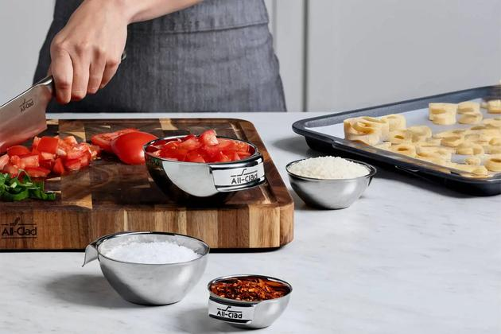

I used to be a messy cook. I would pull ingredients out as I needed them, measure directly into the bowl, and hope for the best. Then I started scaling recipes, and that approach almost destroyed me. You cannot scale a recipe by 4x when you're measuring flour over a mixing bowl with one hand while your other hand is covered in butter. It just doesn't work.
Mise en place is a French phrase that means everything in its place. In practice, it means measuring all your ingredients before you start cooking. Putting each one in its own little bowl. Lining them up in the order you'll use them. Then starting the actual cooking process. It sounds fussy. It takes extra time. But it is the single most important habit for successful scaling.
Let me tell you about the day I learned this. I was scaling a chocolate cake recipe from 8 servings to 24. I had my calculator out. I was multiplying everything by 3. But I was also trying to mix the batter while measuring. I forgot to multiply the baking soda. I used the original 1 teaspoon instead of 3 teaspoons. The cakes came out flat and dense. I blamed my math. But the real problem was my process. I was doing too many things at once.
Now I never start cooking until every ingredient is measured, weighed, and sitting in its own ramekin. For a scaled recipe, I do the math first. Then I measure each scaled amount into a separate container. Then I check my measurements against my calculations. Then I start mixing. This process has saved me from countless mistakes.
When you're scaling a recipe by 2x or 3x, the consequences of a mistake are bigger. A missing tablespoon of sugar is no big deal in a 1x recipe. In a 4x recipe, that missing tablespoon becomes 4 missing tablespoons. That's enough to affect the texture. Mise en place catches those mistakes before they go into the bowl.
I have a system now. I own 24 small glass bowls, the kind you'd use for crème brûlée. They cost me maybe $1.50 each at a restaurant supply store. Before I start any scaled recipe, I line up as many bowls as I need. I label each one with a piece of masking tape. I weigh each ingredient into its bowl. Then I double-check the weights against my scaled recipe sheet.
For a 5x recipe with 10 ingredients, that's 10 bowls. It takes maybe 10 minutes to measure everything. That's 10 minutes well spent because it prevents me from ruining $30 worth of ingredients.
One time I skipped the mise en place because I was in a hurry. I was making a double batch of scones for a school bake sale. I measured the flour directly into the mixing bowl. Then I measured the butter, but I forgot to tare the scale between the flour and the butter. So I added the butter weight on top of the flour weight. I ended up with twice as much butter as I needed. The scones spread into flat greasy discs. I had to throw them away and start over.
If I had used mise en place, I would have measured the flour into its own bowl, tared the scale, measured the butter into another bowl, and noticed that the butter amount seemed high. But because I was measuring directly into the mixing bowl, I had no reference. The mistake was invisible until it was too late.
Mise en place is even more important when you're scaling a recipe that uses the 0.75 or 0.85 exponents. Those numbers are not intuitive. You can't just eyeball 1.8 teaspoons of baking powder. You have to measure it precisely. If you're trying to measure while also mixing, you're going to mess up.
I measure my leavening into the smallest bowls. For baking soda or powder, I use a 1/4 teaspoon measure and count. 1.8 teaspoons means 7 quarter-teaspoons. That's not easy to do on the fly. But if I have the bowl in front of me and I'm not distracted by other tasks, I can do it accurately.
The same goes for salt. 3.2 teaspoons of salt for a 4x recipe means 12 quarter-teaspoons plus a little extra. I measure that into a small bowl, then double-check it before adding it to the mix.
Another benefit of mise en place is that it forces you to check your math. When you have 10 bowls lined up with 10 different weights, you can look at them and see if anything looks wrong. 500 grams of flour looks like a lot. 1,200 grams of flour looks like a mountain. If you've done your scaling correctly, the visual proportions should make sense. If they don't, you might have made a calculation error.
I once measured out 1,200 grams of flour for a 5x recipe and thought, that seems like too much. I rechecked my math. I had multiplied the original 240 grams by 5 correctly. But I had misread the original recipe. It was 240 grams of flour, not 120. So 1,200 was correct. But the visual check made me double-check, which gave me confidence.
For large scale baking, mise en place becomes logistical planning. You can't line up 20 bowls on a small counter. So you stage your mise en place in batches. Measure the dry ingredients for batch one. Mix. While batch one is in the oven, measure the dry ingredients for batch two. This is still mise en place, just spread out over time.
I do this when I'm making large batches of cookies. I measure the flour, sugar, salt, and leavening for all batches at once into separate containers. I have one big container for flour, one for sugar, etc. Then when I'm ready to mix batch one, I scoop from those containers. That's scaled mise en place.
The key is that you never measure and mix at the same time. Those are separate steps. Measure first. Then mix. This is hard for some people because they feel like they're wasting time. But the time you lose measuring is nothing compared to the time you lose throwing away a failed batch.
My students hate mise en place at first. They think it's unnecessary. Then they ruin a batch of something because they forgot an ingredient. Then they become believers. I have one student who now labels her bowls with little sticky notes that say the ingredient name and weight. She says it makes her feel like a professional. She's not wrong.
The other advantage of mise en place is that it helps with equipment management. When you're scaling a recipe, you might need more bowls than you own. Or your scale might not be big enough to weigh 2,000 grams of flour in one go. Mise en place reveals those problems before you start mixing.
I once tried to scale a bread recipe to 6x. My scale only goes up to 2,000 grams. The flour alone was 3,000 grams. I had to weigh it in two batches. If I had been measuring directly into the mixing bowl, I would have had to stop mid-recipe and figure that out. But because I was doing mise en place, I knew the problem before I started. I weighed the flour in two containers, then added both to the mixing bowl.
That's another reason mise en place is essential for scaling. It forces you to think about process. You can't just multiply ingredients. You have to think about whether your tools can handle the multiplied amounts. Mise en place exposes those limits.
I built a tool that helps with the math part, but it can't do your mise en place for you.
For very large scales, I use sheet pans instead of bowls. I line the sheet pan with parchment, weigh each ingredient onto a different spot, and label it with a piece of tape. That saves counter space and makes cleanup easier.
I learned that trick from a bakery I visited. They were making 50 batches of croissant dough at once. They had sheet pans full of pre-measured ingredients lined up on rolling racks. Each sheet pan had flour in one corner, sugar in another, salt in another, yeast in another. The baker would dump the whole sheet pan into the mixer and go.
That's mise en place at industrial scale. You can do a smaller version at home.
The most important thing about mise en place is that it gives you peace of mind. When you're scaling a recipe, there's already so much to think about. The math, the equipment, the timing. Having your ingredients pre-measured removes a huge source of stress. You can focus on technique instead of scrambling to measure the next thing.
I don't do mise en place for every single thing I cook. If I'm making a simple omelet for myself, I don't need little bowls. But if I'm scaling a recipe, or if I'm making something complicated, or if I have a deadline, I always do mise en place. It has saved me too many times to skip it.
Try it next time you scale a recipe. Measure everything into little bowls first. Then mix. See if you notice a difference. I bet you will.
— Olivia
P.S. My 6-year-old now has her own set of little bowls. She measures her own ingredients when she helps me bake. She calls them her "prep bowls." I might be raising a future pastry chef.